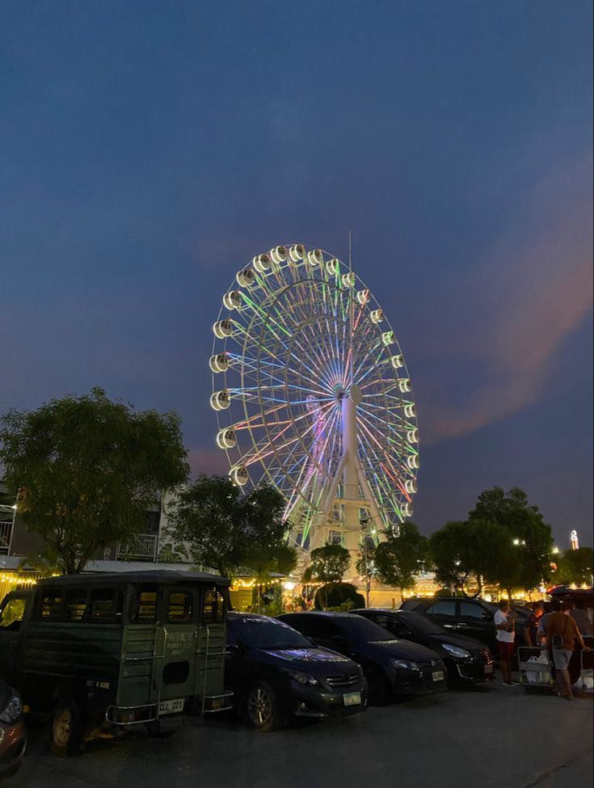
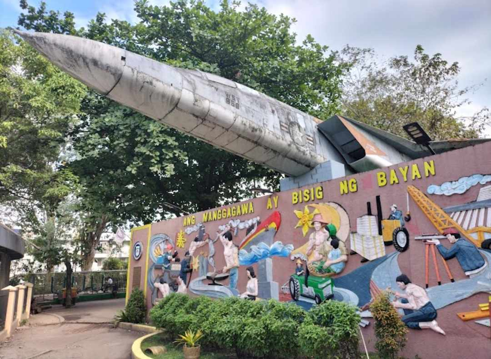
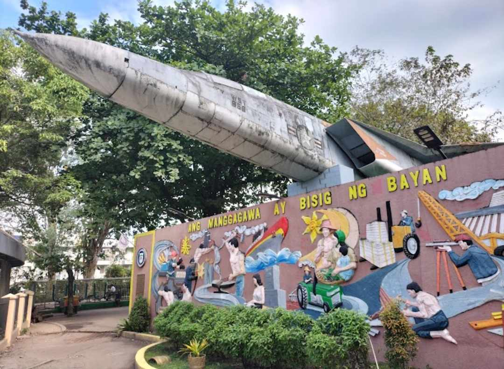
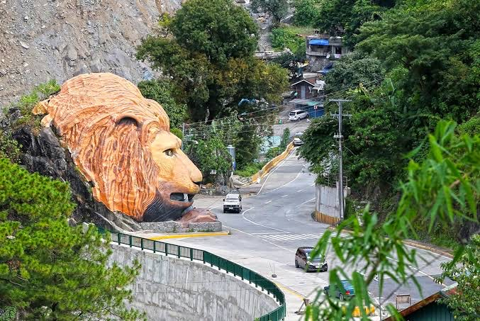
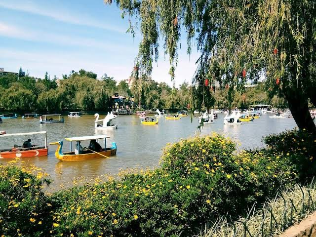

Pampanga
Pampanga, officially the Province of Pampanga (Kapampangan: Lalawigan ning Pampanga; Tagalog: Lalawigan ng Pampanga IPA: [pɐmˈpaŋɡa] pəm-PAHNG-ga), is a province in the Central Luzon region of the Philippines. Lying on the northern shore of Manila Bay, Pampanga is bordered by Tarlac to the north, Nueva Ecija to the northeast, Bulacan to the east, Manila Bay to the central-south, Bataan to the southwest and Zambales to the west. Its capital is the City of San Fernando. Angeles City is the largest LGU, but while geographically within Pampanga, it is classified as a first-class, highly urbanized city and has been governed independently of the province since it received its charter in 1964.
Olongapo City
Olongapo, officially the City of Olongapo (Filipino: Lungsod ng Olongapo; Ilocano: Siudad ti Olongapo; Sambal: Siyodad nin Olongapo; Kapampangan: Lakanbalen/Ciudad ning Olongapo), is a 1st class highly urbanized city in the Central Luzon region of the Philippines. Located in the province of Zambales but governed independently from the province, it has a population of 260,317 people according to the 2020 census. Along with the municipality of Subic, it comprises Metro Olongapo, one of the twelve metropolitan areas in the Philippines.
 

Baguio City
Baguio was established as a hill station by the United States in 1900 at the site of an Ibaloi village known as Kafagway. It was the United States' only hill station in Asia. Baguio is classified as a highly urbanized city (HUC). It is geographically located within Benguet, serving as the provincial capital from 1901 to 1916, but has since been administered independently from the province following its conversion into a chartered city. The city is the center of business, commerce, and education in northern Luzon, as well as the seat of government of the Cordillera Administrative Region. According to the 2020 census, Baguio has a population of 366,358.
 